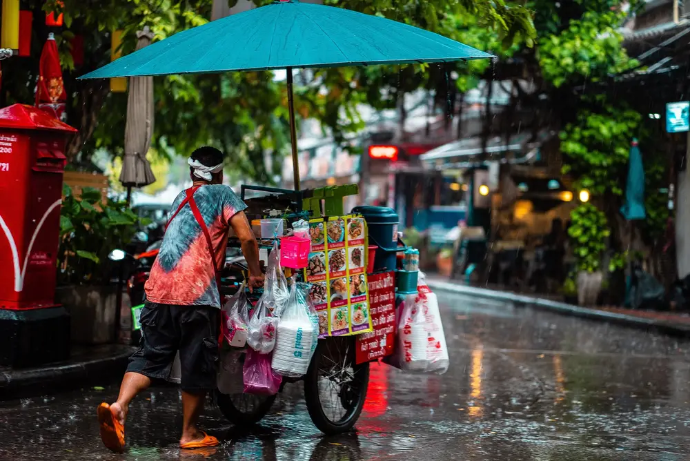
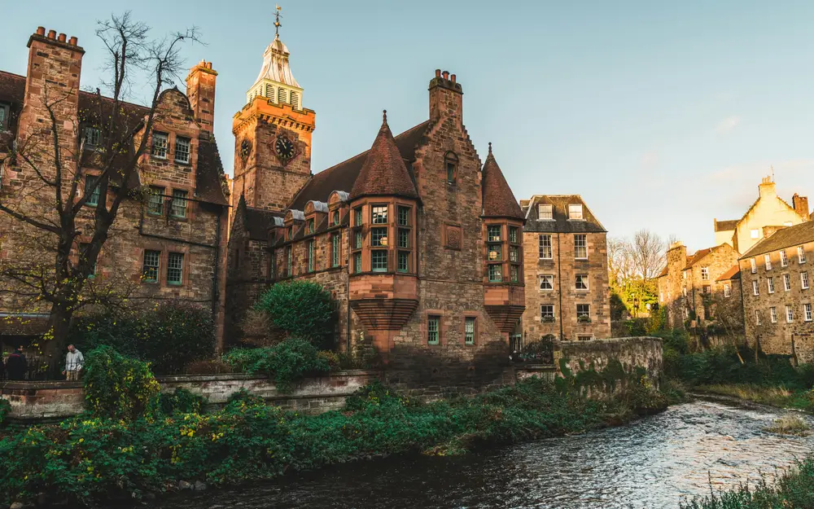
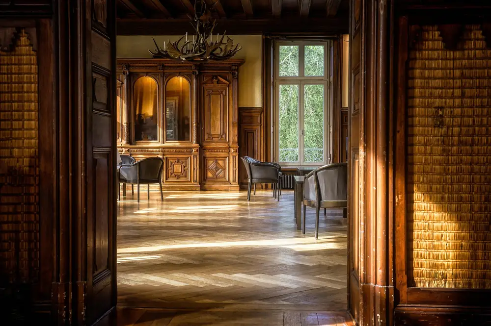
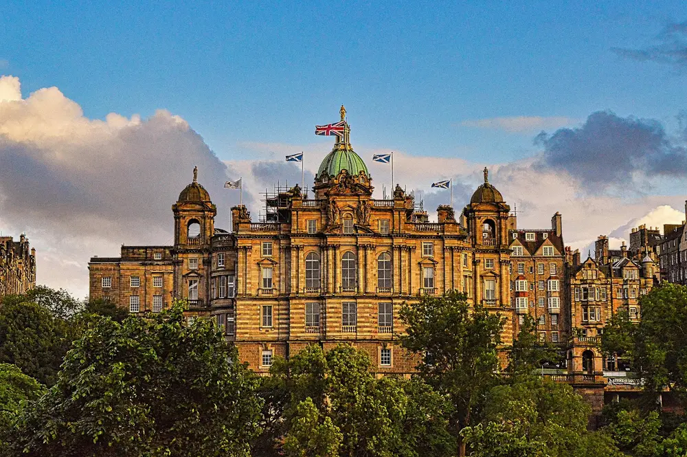

Food
Eating Slowly in Edinburgh
The dishes worth trying, the markets worth a Saturday morning, and the waterfront worth a long lunch.
Read article →Discover practical travel guides, destination tips, cultural experiences, and slow-travel inspiration to help you plan meaningful journeys.
Explore destinations → Guides
Guides
Where to go, what to see, and how to pace it.
 Seasons
Seasons
The right place for the right month of the year.
 Solo
Solo
Practical ideas for traveling alone with confidence.
Quiet rooms, old shelves, and the stories inside them.
 Tips
Tips
Fewer stops, more time, and room to wander.

The dishes worth trying, the markets worth a Saturday morning, and the waterfront worth a long lunch.
Read article →
Where to go first, what is worth your time, and how to pace your days.
Read article →
Quiet rooms, old shelves, and the stories inside them.
Read article →
Notes, photographs, and ideas for your next great escape.
Read article →
We believe the best trips are not measured in destinations visited, but in moments remembered. DoTravelling is a collection of thoughtful travel guides for curious travelers who prefer meaningful experiences, cultural discoveries, and exploring destinations at a slower pace.
Read our journal →